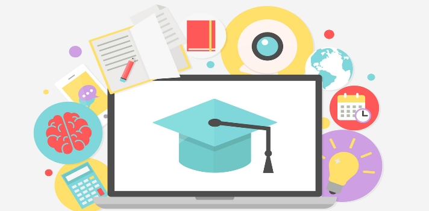

Sección para conocer más acerca de este concepto y la importancia del mismo.
Se entiende por clases en línea a aquella en la que los docentes y estudiantes participan en un entorno digital a través de las nuevas tecnologías y de las redes de computadoras, haciendo uso intensivo de las facilidades que proporciona Internet y las tecnologías digitales.
Las clases en línea, son la sensación actual ya que nos permiten aprender todo lo que se nos ocurra tan solo a través de un click. Innovar y mejorar los conocimientos que se poseen debería de ser uno de los principales fines de las personas no quedarse única y exclusivamente con lo que ya conocen, sino ir un poco más allá y comenzar a buscar qué otro tipo de cosas pueden aprender y de qué manera pueden mejorar.
Utilizar la tecnología a nuestro beneficio es lo que se debe procurar en esta nueva era digital, puesto que nos podemos dar cuenta que hoy basta con tener una computadora e internet para tener al alcance de nuestras manos todo el mundo.
La forma de estudio y aprendizaje tradicional ha sufrido un cambio de 180 grados, ahora como podemos darnos cuenta se ha sustituido los cursos presenciales por foros en línea, chats de debate, clases virtuales de tal manera que en cualquier momento que la persona lo desee puede ingresar a ellos sin ningún problema y aprender más de lo que desea saber.

Entre los beneficios de las clases en línea tenemos:
Miles de oportunidades de formación: Es muy amplia la variedad de cursos que puedes tomar a través de la red, por esto será bueno que elijas el que más se ajusta a tus necesidades y a tu nivel educacional.
Costos: El dinero que el estudiante deberá invertir para poder completar sus estudios no será un problema. Las clases en línea suelen ofrecen materiales que podrán ser descargados por cualquier alumno desde su ordenador. Incluso la descarga de conferencias, textos y cualquier otro material adicional.
Te permitirá ahorrar tiempo: Los cursos a distancia obviamente no son presenciales. Te permitirán ahorrar el tiempo que gastarías en trasladarte y en estacionar tu vehículo si fueras a un curso tradicional. Esta modalidad, te permite disponer de tu tiempo.
Elige cuándo estudiar: ¿Rindes más de mañana o de noche? Si optas por un programa a distancia podrás elegir cuándo estudiar de acuerdo a tu gusto y el resto de tus actividades. Lo ideal es que te establezcas una rutina para conciliar con éxito el trabajo y las clases.
Flexibilidad para completar tareas: Los cursos presenciales requieren que los estudiantes completen sus tareas en un plazo, pero quienes elijan por la modalidad online podrán hacerlo cuando lo consideren.
Equilibrar trabajo y estudio: Esta es otra de las ventajas de los programas en línea. Te permitirán convivir con ambas actividades sin padecer el estrés propio de quienes deben trabajar y, de noche, asistir a clase.
Tus cursos no se atrasarán: A veces, por diversas razones, muchas clases de cursos convencionales pueden cancelarse lo que implica que el semestre se alargue. En las clases online eso nunca sucederá, incluso si tu internet un día no funciona.
Enfocarte en tus necesidades: Los programas online le permiten al estudiante focalizarse en las tareas que serán de su utilidad para el trabajo, y así también, ahorrar tiempo.